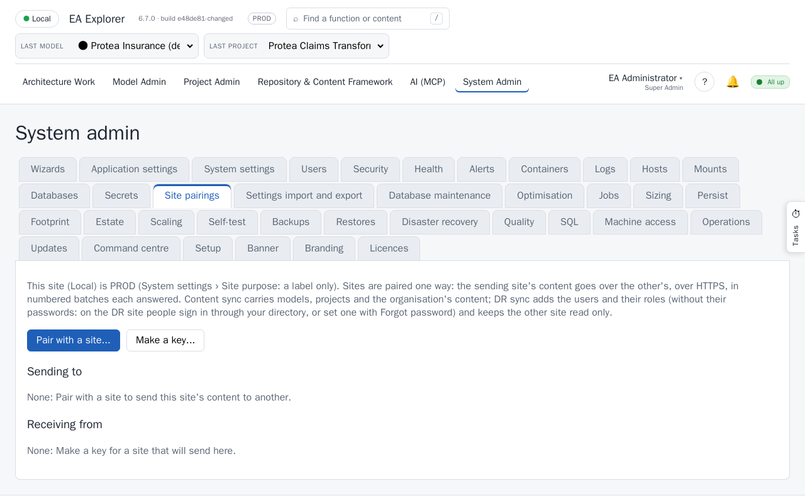

Make a pairing key
For: System Admin
A key another site uses to pair with this one; shown once.

#/admin/pairingsWhy do this
A pairing key is how another site proves it may send to this one. It is shown once and only its fingerprint is kept here, so a copied key cannot be read back from the site. See Backups, restores and disaster recovery.
The installation is built to look after itself as far as it can, and to ask before anything risky. These tasks are the decisions it leaves to you: what to run, when, and how far to trust a change.
In TOGAF terms: Outside the method: this keeps the tool that holds the Architecture Repository running. See EA Explorer and the TOGAF Standard.
The goal: Another site can pair with this one.
Before you start You need the Super Admin or IT Admin role.
Steps
- Open System Admin › Site pairings, Make a pairing key.
- Name it; Make.
- Copy it now: only its fingerprint is kept here.